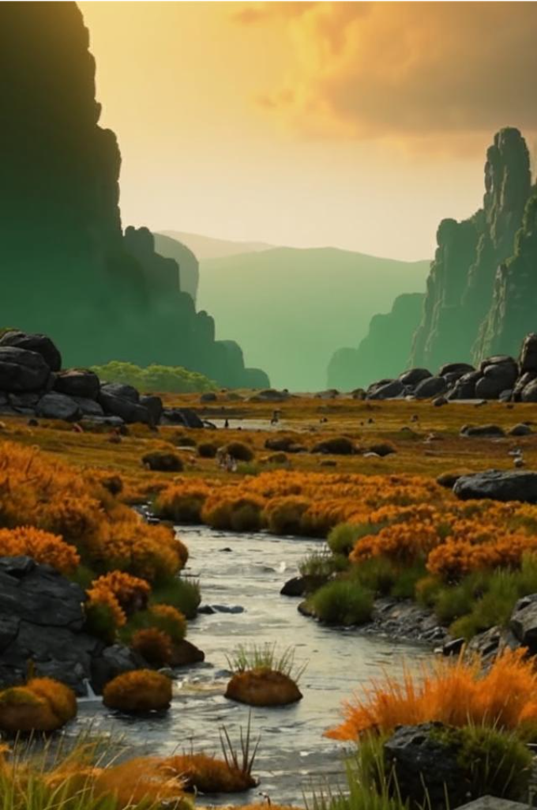

Планета Сальва – жемчужина дикой природы, привлекающая тысячи путешественников со всех уголков вселенной. Её величественные соляные горы и реки с ионизированной водой поражают воображение и манят исследователей.
Каждый, кто поднимается на вершины этих гор, ощущает себя частью древней легенды, вписанной в соляные кристаллы. А те, кто отважится попробовать воду из местных рек, чувствуют её необычный вкус и заряжаются энергией природы.
Планета предлагает уникальные возможности для экстремальных видов спорта, научных экспедиций и духовных практик. На Сальве каждый находит что-то своё, что помогает взглянуть на мир иначе и обрести внутреннюю гармонию.